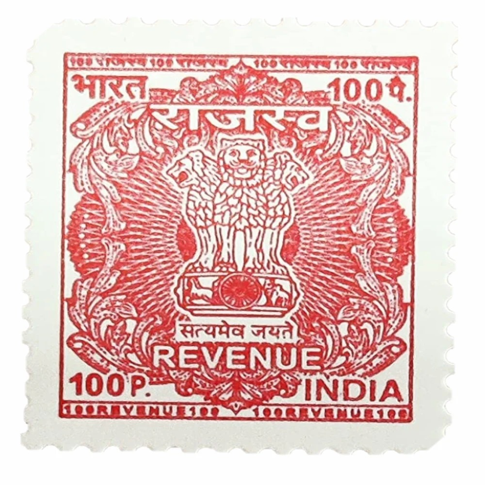

A revenue stamp, also known as a fiscal stamp, is a type of stamp used to collect taxes or fees on various transactions, such as: - Document registration: Property deeds, contracts, and other legal documents. - Court fees: Filing fees for lawsuits, petitions, and other court documents. - Taxes: Sales tax, value-added tax (VAT), and other types of taxes. - Licenses and permits: Business licenses, permits, and other authorizations. Revenue stamps are typically affixed to the relevant document or application, serving as proof of payment. They come in various denominations and designs, depending on the issuing authority and the specific use case.
Key features of revenue stamps:
Types of revenue stamps:
Adhesive stamps:
Importance of revenue stamps: